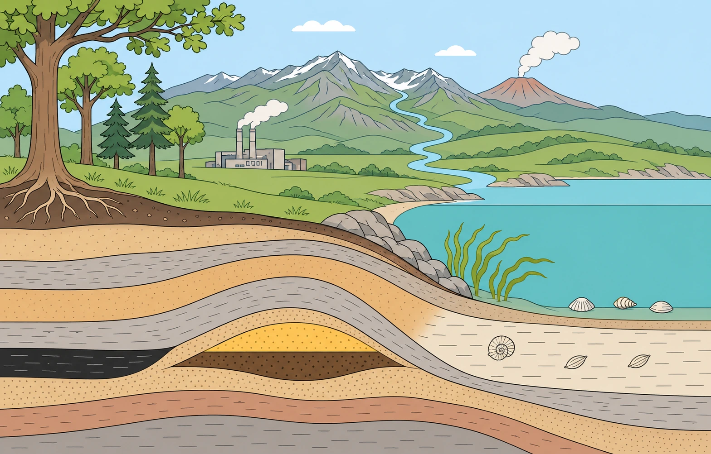

Alfa
ENSO — El Niño & La Niña
Skru på passatvinden, flyt det varme vand i Stillehavet, og undersøg samspillet mellem hav, atmosfære og vejret ude i verden.
Simuleringer og forsøgsvejledninger til naturgeografi. Alt kører i browseren uden login — sæt dem på tavlen, eller giv eleverne linket.
Her står betaversionerne: gennemarbejdede og klar til undervisning, men de kan stadig blive rettet. Alfaversionerne virker og kan bruges, men mangler endnu et gennemsyn af fagligt indhold, forklaringer eller layout.
Skru på passatvinden, flyt det varme vand i Stillehavet, og undersøg samspillet mellem hav, atmosfære og vejret ude i verden.
Følg strålingen i seks visuelle trin. Undersøg modstråling, og sammenlign jordens temperatur uden drivhuseffekt, med nuværende og med forstærket drivhuseffekt.
Sollys ind, varme ud — og hvad gasserne gør ved regnskabet. Seks trin med figur og forklaring side om side.
Albedo, tilbagestråling og feedbacks lagt oven på grundmodellen — med tre tilstande til forskellige formål.
Send luftpakken over bjerget, og se præcis hvor regnen falder — og hvorfor læsiden bliver varm og tør.
Lær tør- og fugtadiabatisk afkøling. Slip derefter en varm luftpakke i fire atmosfærer, og se hvorfor den stopper eller danner sky.
Køl luften ned til dugpunktet, og se kondensationen sætte i gang.
Trecellemodellen på en globus, der kan drejes, med et snit fra pol til pol: passat, vestenvind, ITK, Corioliseffekten og monsun.
Tre luftsøjler: den midterste opvarmes eller afkøles. Se trykfladerne løfte sig eller synke, luften strømme i højden og et lavtryk eller højtryk opstå ved jorden.
Land/hav-brise, det sibiriske højtryk og monsunen — hvor blæser vinden hen, og hvorfor?
Vælg sted og dato: solens middagshøjde, daglængden og indstrålingen hen over året — og hvad der sker, hvis jordaksen ikke hælder.
Midtoceanisk ryg, subduktion, kontinentkollision og transformforkastning: lad tiden løbe, og se havbunden vokse, bjergene rejse sig og jordskælvene falde i de rigtige dybder.
Hvor meget kobber er der tilbage? Skru på pris, teknologi og efterforskning, lad tiden gå, og se reserven og R/P-forholdet ændre sig.
Se P-, S- og overfladebølger ryste klippen, find et skjult skælv med S−P-metoden og tre cirkler, og følg bølgerne gennem Jordens kerne.
Følg en sten gennem kredsløbet, find ud af hvor ved pladegrænserne skolens sten er dannet, og se hvorfor langsom afkøling giver store korn.
Hvorfor er Island så vulkansk? Kort med terræn, havbund og vulkansystemer fra målte data, et 3D-landskab, der kan skæres op, og et tværsnit af ryggen.
Stratovulkan, skjoldvulkan og hotspot-vulkan: følg magmaet fra der, hvor det dannes, og se i lupen, hvorfor gassen sprænger sejt magma til aske, men slipper roligt ud af tyndtflydende lava.
Ler, silt, sand og grus — hvor bliver regnvandet af nede i jorden?
Varme og kolde strømme på en globus, der kan drejes: vinden, hvirvlerne, Golfstrømmen og transportbåndet i dybet.
Temperatur og saltholdighed driver den termohaline cirkulation — eller slår den fra.
Skru på bølgehøjde og periode, og se om tilbageskyllet når at slutte, før næste bølge kommer — det afgør, om stranden bygges op eller ædes.
Drej jorden mellem måne og sol, og se hvorfor der er to tidevandsbuler — og to højvande i døgnet.
Drej kompashuset til en kurs, og drej dig selv, til nålen ligger i orienteringspilen — med opgaver i at tage og følge en kurs.
Sæt et kompas på kloden, aflæs misvisningen, og flyt den magnetiske nordpol hen, hvor den har ligget siden 1831.
Drej globussen, find et sted eller en proces, og slå lag til: pladegrænser, vulkaner, jordskælv, nedbør og befolkning — med modellerne samlet ét sted.
Slå skolens sten op på nummer eller navn — med mineralindhold, dannelse og findested — og bestem en ukendt sten med lup, syre og ridsetest.
Ingen materialer matcher søgningen.
Drej globussen, find verdensdele og verdenshave, og sæt navn på breddekredse og Vahls klimazoner. Øv også koordinater.

Byg kulstofkredsløbet i tre lag: puljerne, de hurtige processer og de geologiske processer. Sæt navn på kredsløbets pile, blandt andet forvitring og fossildannelse.
Sæt magasinerne og transportmekanismerne på vandets kredsløb — figuren bygges op lag for lag.
Sæt skorpe, kappe og kerne på Jorden og find litosfæren og astenosfæren i et udsnit af de øverste 400 km.
Mål temperaturen på gråtoner under en lampe og på overflader omkring skolen, og forklar is-albedo-tilbagekoblingen.
Vej granit, basalt, peridotit og eklogit i luft og i vand, og brug densiteten til at forklare, hvorfor oceanbunden synker.
Sortér bjergartsprøver efter, hvor i kredsløbet de er dannet, og undersøg en stor sten i jeres nærområde.
Optegn kystlinjen på historiske kort og luftfotos i MiljøGIS, og se hvor der er eroderet og aflejret.
Lampe, termometer og et, to, tre og fire lag viskestykke: hvor meget varmere bliver det for hvert lag?
Modelforsøg med hele cirkulationen i ét kar: is i den ene ende, varme i den anden.
Koldt mod varmt og salt mod fersk med skilleplade, og derefter hele pumpen i ét kar.
To kar under en lampe: is på land og is i havet — hvilken hæver vandstanden, når den smelter?
Undersøg Hawaii–Emperor-kæden i Google Earth, og beregn ud fra vulkanernes alder, hvor hurtigt Stillehavspladen har flyttet sig.
Trin for trin med udstyrsliste, sikkerhed og forventet resultat.
Samme forsøg med journaldel: felter til klasse og dato, fotodokumentation med H og L markeret, og spørgsmål om det termiske lavtryk.
Find hovedopholdslinjen i GEUS' geologiportal, og sammenlign terræn og jordarter vest og øst for den og nord for Limfjorden.
Lad fire væsker løbe ned ad et skråt bræt, og forklar ud fra farten, hvorfor nogle vulkaner er høje og andre brede.
Bestem ledeblokke, find deres oprindelsessted i Norge, Sverige og Østersøen, og afgør, hvilket isfremstød der har bragt dem.
Aflæs P- og S-bølger på rigtige seismogrammer fra et canadisk jordskælv, og find epicentret med cirkler i Google Earth.
Mål luftfugtigheden inde og ude med et psykrometer, find dugpunktet, og beregn, hvor mange gram vanddamp der er i klasselokalet.
Bjergarterne sat i lagfølge, olie der stiger op gennem sand i et glas, og en densitetsmåling, der forklarer hvorfor.
Opmål et terrænprofil i felten, og tegn landskabets form ud fra jeres egne målepunkter.
Design selv et forsøg, der måler P- og S-bølgernes fart i en slinky-fjeder, og film bølgerne.
Kortere udgave med kun to jordtyper: hypotese, måleskema, graf og konklusion om grundvand og landbrug.
Udvidet udgave af jordforsøget: beskrivelse af de fire sedimenter, beregning af porøsitet og markkapacitet, og diskussionsspørgsmål til journalen.
Skru på pris, teknologi og genanvendelse i simuleringen, og afprøv, om R/P-forholdet holder som prognose for kobber.
Belys en solfanger med en lampe i en halv time, og beregn, hvor stor en del af lyset der ender som varme i vandet.
Varm en skål sand og en skål vand under en lampe, og lad dem køle af igen: hvorfor vender vinden ved kysten om aftenen?
Mål bølgers fart i et vandkar ved tre dybder, sammenlign med v = √(g·d), og regn på en tsunami over oceanet.
Følg nedbør og fordampning måned for måned med DMI's tal, og find ud af, hvornår der dannes grundvand — i et gennemsnitsår og i tørkeåret 2018.
To skillepladeforsøg: hvad temperaturforskel og saltforskel hver for sig gør ved to vandmasser.
Mål vind og sol med en modelvindmølle og et solcellepanel, aflæs elsystemet lige nu, og find den bedste placering til en vindmøllepark på Fyn.